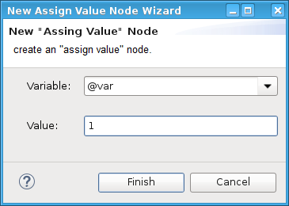

Assign Value node
Use this node when you wish to assign a certain value to a variable at a point in your testflow.

Functional changes
- Introduced before SmarTest 6.3.2
Use this node when you wish to assign a certain value to a variable at a point in your testflow.
